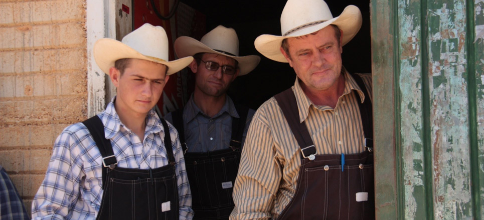

De 100 000 menonitas de origen alemán que viven en México, unos 90 000 están establecidos en Chihuahua; son el mayor grupo étnico no indígena del Estado.Pertenecen a una comunidad endogámica, muy religiosa, de origen germánico, que emigró desde la provincia canadiense de Manitoba tras perder sus privilegios en medio de una campaña germanofóbica durante la Primera Guerra Mundial y luego de ser invitados a México por el gobierno de Álvaro Obregón que cubrió los gastos de traslado. Son menonitas, seguidores de las creencias de Menno Simons, un líder del ala pacifista del movimiento anabaptista durante la Reforma Protestante. En 1922 se inició la inmigración con la llegada de 3 000 personas (que se establecieron en su totalidad en Chihuahua), y para 1927 ya se habían establecido 10 000 en México, repartidos entre los estados de Chihuahua, Durango, Campeche y Zacatecas.
Prácticamente la totalidad de la población (98%) se ocupa de labores agrícolas, destacando la producción de cereales, frutales y hortalizas. Asimismo, dominan la conserva de frutos y vegetales y el embutido de carnes frías, saladas y ahumadas.
